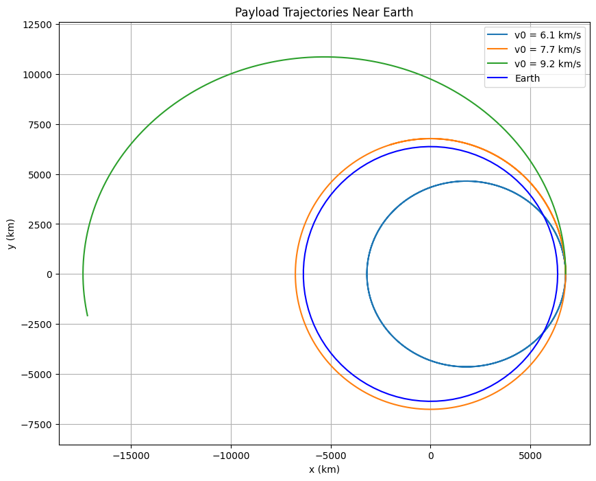

Problem 3: Trajectories of a Freely Released Payload Near Earth
Detailed Solution in a Single Black Box
Detailed Step-by-Step Solution: Trajectories of a Freely Released Payload Near Earth
Step 1: Analyze Possible Trajectories
When a payload is released from a moving rocket near Earth, its trajectory depends on its initial position, velocity, and Earth’s gravitational field. The trajectory type is determined by the specific energy \(\epsilon\) and angular momentum, leading to three possible outcomes:
- Elliptical Trajectory: The payload follows a bound orbit (ellipse or circle) if the total energy is negative.
- Parabolic Trajectory: The payload escapes to infinity with zero velocity at infinity if the total energy is zero.
- Hyperbolic Trajectory: The payload escapes to infinity with excess velocity if the total energy is positive.
The specific energy \(\epsilon\) (energy per unit mass) is:
$$
\epsilon = \frac{v^2}{2} - \frac{G M}{r}
$$
where \(v\) is the payload’s speed, \(r\) is its distance from Earth’s center, \(M\) is Earth’s mass, and \(G\) is the gravitational constant.
- \(\epsilon < 0\): Elliptical orbit (bound).
- \(\epsilon = 0\): Parabolic trajectory (marginal escape).
- \(\epsilon > 0\): Hyperbolic trajectory (escape with excess speed).
To derive this, consider the total mechanical energy per unit mass. The kinetic energy per unit mass is: $$ \frac{1}{2} v^2 $$ The gravitational potential energy per unit mass at distance \(r\) is: $$ -\frac{G M}{r} $$ Thus, the specific energy is: $$ \epsilon = \frac{v^2}{2} - \frac{G M}{r} $$ At the escape velocity, \(\epsilon = 0\), which gives: $$ \frac{v^2}{2} = \frac{G M}{r} \quad \Rightarrow \quad v = \sqrt{\frac{2 G M}{r}} $$ This matches the second cosmic velocity derived earlier, confirming that \(\epsilon = 0\) corresponds to a parabolic trajectory.
Step 2: Numerical Analysis of the Payload’s Path
The motion is governed by Newton’s law of gravitation in vector form: $$ \frac{d^2 \vec{r}}{dt^2} = -\frac{G M}{r^3} \vec{r} $$ where \(\vec{r}\) is the position vector from Earth’s center to the payload, and \(r = |\vec{r}|\). In Cartesian coordinates, \(\vec{r} = (x, y)\) (assuming 2D motion in the orbital plane), so: $$ r = \sqrt{x^2 + y^2} $$ The acceleration components are: $$ \frac{d^2 x}{dt^2} = -\frac{G M x}{r^3}, \quad \frac{d^2 y}{dt^2} = -\frac{G M y}{r^3} $$ To solve numerically, convert this second-order system into a system of first-order ODEs. Define the state vector as \((x, y, v_x, v_y)\), where \(v_x = \frac{dx}{dt}\) and \(v_y = \frac{dy}{dt}\). The system becomes: $$ \frac{dx}{dt} = v_x, \quad \frac{dy}{dt} = v_y $$ $$ \frac{dv_x}{dt} = -\frac{G M x}{r^3}, \quad \frac{dv_y}{dt} = -\frac{G M y}{r^3} $$ We’ll use the gravitational parameter \(\mu = G M\) for numerical efficiency, where \(\mu\) combines \(G\) and \(M\) into a single constant.
Step 3: Relate Trajectories to Orbital Scenarios
- Orbital Insertion: If the payload’s velocity matches the first cosmic velocity at its altitude, it enters a circular orbit. For example, at 400 km altitude, the circular velocity is: $$ v_{\text{circular}} = \sqrt{\frac{\mu}{r}} $$ If the velocity is less, the orbit becomes elliptical with the release point as the apogee. If greater but still \(\epsilon < 0\), the orbit is elliptical with the release point as the perigee.
- Reentry: If the trajectory intersects Earth’s surface (or atmosphere), the payload reenters. For an elliptical orbit, if the perigee is below Earth’s surface (\(r_{\text{perigee}} < R\)), the payload will collide with Earth.
- Escape: If the velocity exceeds the escape velocity at that altitude: $$ v_{\text{escape}} = \sqrt{\frac{2 \mu}{r}} $$ the trajectory becomes parabolic (\(\epsilon = 0\)) or hyperbolic (\(\epsilon > 0\)), and the payload escapes Earth’s gravity.
Step 4: Computational Tool to Simulate and Visualize
We’ll simulate the payload’s motion at an altitude of 400 km (typical for LEO) with initial velocities below, at, and above the circular velocity to observe different trajectories.
Python Code: Payload Trajectory Simulation
import numpy as np
import matplotlib.pyplot as plt
from scipy.integrate import odeint
# Constants
G = 6.674e-11 # Gravitational constant (m^3 kg^-1 s^-2)
M = 5.972e24 # Earth’s mass (kg)
R = 6371e3 # Earth’s radius (m)
mu = G * M # Gravitational parameter (m^3 s^-2)
# Initial conditions: Released at 400 km altitude
h = 400e3 # Altitude (m)
r0 = R + h # Initial distance from Earth’s center (m)
x0, y0 = r0, 0 # Start on x-axis
v_circular = np.sqrt(mu / r0) # Circular orbit velocity at this altitude
v_escape = np.sqrt(2 * mu / r0) # Escape velocity at this altitude
# Test different initial velocities: below, at, and above circular velocity
v0_factors = [0.8, 1.0, 1.2] # Multipliers for circular velocity
trajectories = []
# Time array
t = np.linspace(0, 7200, 1000) # 2 hours
# System of ODEs
def payload_motion(state, t, mu):
x, y, vx, vy = state
r = np.sqrt(x**2 + y**2)
ax = -mu * x / r**3
ay = -mu * y / r**3
return [vx, vy, ax, ay]
# Simulate for each initial velocity
for factor in v0_factors:
v0 = factor * v_circular
state0 = [x0, y0, 0, v0] # Initial velocity in y-direction (tangential)
solution = odeint(payload_motion, state0, t, args=(mu,))
trajectories.append(solution)
# Plot trajectories
plt.figure(figsize=(10, 8))
for i, traj in enumerate(trajectories):
label = f"v0 = {v0_factors[i]*v_circular/1000:.1f} km/s"
plt.plot(traj[:, 0]/1000, traj[:, 1]/1000, label=label)
# Plot Earth
theta = np.linspace(0, 2*np.pi, 100)
plt.plot(R/1000 * np.cos(theta), R/1000 * np.sin(theta), "b-", label="Earth")
plt.xlabel("x (km)")
plt.ylabel("y (km)")
plt.title("Payload Trajectories Near Earth")
plt.axis("equal")
plt.grid(True)
plt.legend()
plt.show()
# Calculate specific energy to classify trajectories
print("Trajectory Classification:")
print(f"Circular Velocity at {h/1000} km: {v_circular/1000:.1f} km/s")
print(f"Escape Velocity at {h/1000} km: {v_escape/1000:.1f} km/s")
for i, factor in enumerate(v0_factors):
v0 = factor * v_circular
r = r0
epsilon = v0**2 / 2 - mu / r
if epsilon < 0:
traj_type = "Elliptical"
elif abs(epsilon) < 1e-3: # Small threshold for numerical precision
traj_type = "Parabolic"
else:
traj_type = "Hyperbolic"
print(f"v0 = {v0/1000:.1f} km/s: Energy = {epsilon:.2e} J/kg, Trajectory = {traj_type}")

Explanation of the Code
- Setup: The payload is released at 400 km altitude, where \(r = R + h\). The circular velocity \(v_{\text{circular}}\) and escape velocity \(v_{\text{escape}}\) are computed at this altitude. Initial velocities are set as 0.8, 1.0, and 1.2 times the circular velocity.
- Simulation: The odeint function solves the system of ODEs, integrating over 2 hours to capture the trajectory shapes.
- Visualization: Plots the trajectories in the x-y plane, with Earth shown for scale. The aspect ratio is set to equal to ensure accurate representation.
- Classification: Computes the specific energy \(\epsilon\) for each trajectory to classify it as elliptical, parabolic, or hyperbolic.